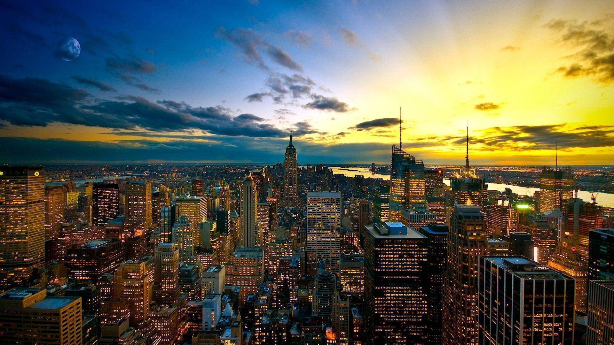

Welcome to My Tourist Cities Website
This website provides information about the main tourist cities in the world, including their history, culture, tourist attractions, and practical information for travelers. Use the navigation bar above to explore the different pages.
